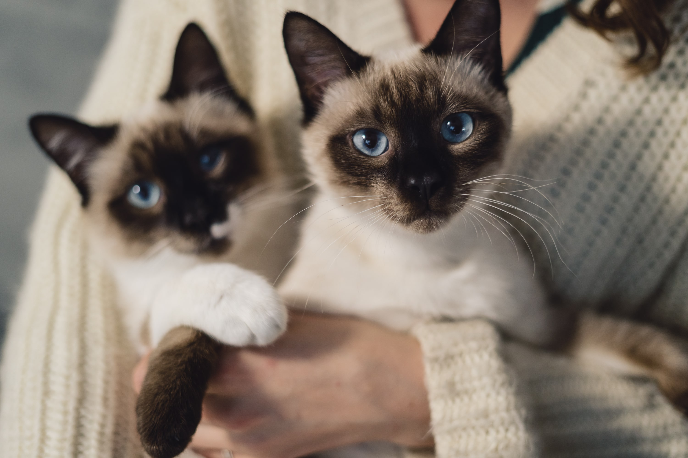
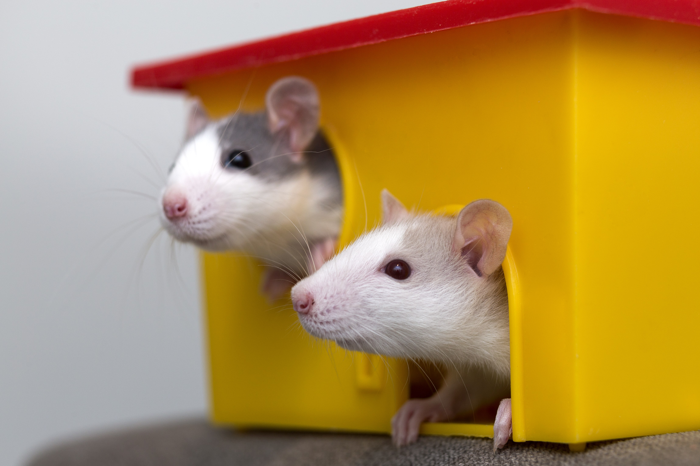
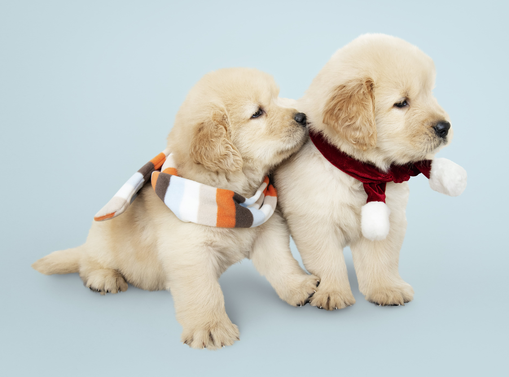

HISTORIAS FELICES DE NUESTROS ENGREÍDOS DEL HOGAR
|  |  |  |
|
Esta es la historia de Michi y Pikachu: dos gatitos muy lindos que encontraron el amor gracias a nuestra página web. Carla, la mamá de Michi tenía mucha ilución de encontrarle una pareja a su gatita y gracias a nuestra página lo logró. |
¡Les presentamos a dos ratoncitos muy lindos! Su mami Lorena encontró la pareja a su ratoncito. Tenía ganas de buscar a una ratoncita pero no sabía por donde empezar. No es fácil encontrar ratoncitos. Por lo que está muy agradecida con la página que le permitió encontrar la media naranja a Pepita, su retoncito. |
¡Rocky y Pelusa encontraro el amor! Carla, la dueña de Pelusa, al igual que muchas mascotas se registrar diariamente en nuestra página web donde encuentran a miles de mascatos y pueden buscar a su media naranja perruna. No esperes más y registra a tu mascota |